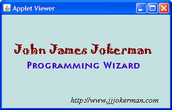

This week you'll concentrate on simple IPO (input, processing and output) assignments. Here's the list of things you should do this week.
-
IPO Practice 1—FeetToMeters:
Write a program that reads a number in feet, (input by the user),
and then converts it to meters and displays the result.
Use a named constant to represent
METERS_PER_FOOT. The value you should use for your constant is:0.305. (This will ensure that everyone's calcuations come out the same.) Here's what the FeetToMeters program should look like:
 Follow the same steps and basic structure as you did for
the problems in class this week.
Follow the same steps and basic structure as you did for
the problems in class this week.
Once you have created the program, compile it and then Check your results. Keep trying until you get a perfect score. (You'll want to check your style as well.) Look on the Solutions page if you get stuck, or to check your work after you're finished.
-
IPO Practice 2—TipCalc:
Write a console IPO program named TipCalc that reads a
subtotal and gratuity rate and then computes the gratuity
and total bill. Here's what a sample interaction should look like along
with some notes about the program's requirements:
 Follow the same steps as the problems in lecture this week.
Follow the same steps as the problems in lecture this week.
Once you have created the program, compile it and then Check your results. Keep trying until you get a perfect score. You'll want to check your style as well. Look on the Solutions page if you get stuck, or to check your work after you're finished.
-
 IPO Practice 3—SumDigits:
Write a console program named SumDigits that reads a
single integer from the user. (Do not read the input
as a
IPO Practice 3—SumDigits:
Write a console program named SumDigits that reads a
single integer from the user. (Do not read the input
as a String.) You can assume that the user will cooperate and only input values between 0 and 1,000. Your program should use the arithmetic operators discussed in class to sum all of the individual digits in the number. To the right is a sample interaction so you can see what the program should look like as it runs. (Click to enlarge).To calculate the digits you'll have to do several divisions and integer remainder (%) operations. Notice that for any integer,
n % 10returns the value of the right-most digit, andn / 10returns a new number with the right-most digit discarded.Follow the same steps as the example IPO problems in class. Once you have created the program, compile it and then Check your results. Keep trying until you get a perfect score. Check the Solutions page if you need help.
-
IPO Practice 4—CircleStats:
Write a console program named CircleStats that reads a
radius value for a circle and the computes and prints the
area and the circumference. Here's what a sample interaction
should look like along with the formulas you'll need:
 Remember to use
Remember to use Math.PIfor the value of pi. You can square the radius using multiplication or theMath.pow()function.Follow the same steps as the example IPO problems from lecture. Once you have created the program, compile it and then Check your results. Keep trying until you get a perfect score. Use the Solutions page if you get stuck.
-
Fonts and Colors—BusinessCard:
Now that you know how to change colors and how to use
different fonts, complete the applet named BusinessCard
that you'll find in the Chapter03 folder. Add your name, a title
and your email address. The data should fit on a standard 2 x 3.5"
business card. (I've added a method to automatically size the window
when run in DrJava.) Use different fonts and colors as you like.
Here's an example:

There is no Check program for this exercise.